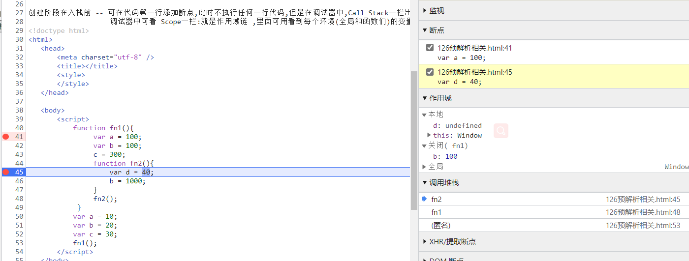

创建阶段在入栈前 -- 可在代码第一行添加断点,此时不执行任何一行代码,但是在调试器中,Call Stack一栏出现了,代表着代码执行之前创建了全局执行上下文环境后环境入栈了.
调试器中可看 Scope一栏:就是作用域链 ,里面可用看到环境内(全局和函数们)的变量对象,而作用域链就是由内到外,一层层环境的变量对象组成的,本层找不到到上一层,直到全局环境的变量对象
所以查看scope可用查找当前位置的作用域链,有几个变量对象就有几层,例如fn2中的scope就有三个变量对象,分别是local(自身) fn1(fn1) 和global(全局)
